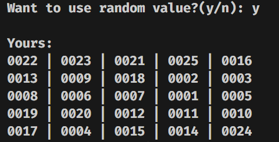
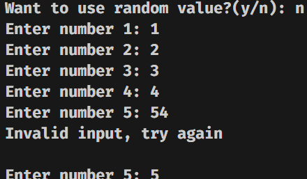
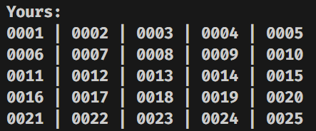

This is one of my most advanced console based game.
It is advanced because, it can do random entry itself.

As you can see it asks whether to use random value or do it
manually like.

The final result of manual entry will be same as the random
one but with manual entry 🙂👍.

Create your own bingo table by inserting numbers form 1 to 25, the order its up to you.
Let others complete their bingo table too.
The person who will start first will randomly or strategically choose a number and tell everyone.
Everyone including that person who chose it will cut that number.
Just like first everyone will choose number accordingly (already cut number cant be choosen again).
If 5 cut numbers are in straight line for a player then that one can count it as one point or whatever you want to say.
As soon as anyone complete total 5 times that straigth line of 5, basically 5 points then shout Bingo